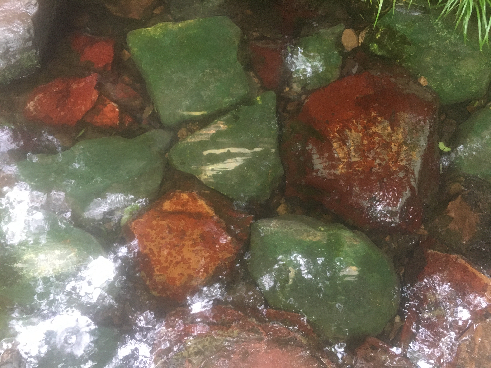

1.How did you start designing?
Chen It started with my grandfather. He taught me traditional Chinese painting when I was a child, and that was my first real connection to art. Later, I took after-school classes and studied sketching and color painting more systematically. In high school, I decided I wanted to make art my career. When I was applying to universities in my junior year, I chose design specifically. I have ADHD, and I've always been more sensitive to shapes than to words. Design felt like a natural way for me to communicate.
2. How did Hangzhou shape you?
Annette What parts of growing up in Hangzhou still show up in your work today, like places, colors, objects or traditions?
Chen Hangzhou is a city where the old and the new live side by side. As the capital of the Southern Song dynasty, places like West Lake and Leifeng Pagoda remain at the city's heart. At the same time, the city has huge contrasts. The tourist areas feel slow and historic, and the financial district moves very fast.
Growing up between those two rhythms made me more sensitive to my surroundings. I even thought about it when I chose where to study, which is part of why I came to California, where life is less crowded. Hangzhou also gave me a strong education in traditional culture and history, and that still shapes my work today.

"Photographers taken by river near Chen's home"
3. Why Chinese culture?
Annette Why do you keep coming back to Chinese culture as a theme, and what do you hope people feel when they see it in your work?
Chen For me, it's personal. My grandfather's lessons in Chinese painting and Hangzhou's cultural atmosphere form the foundation of how I see things. I didn't pick Chinese culture as a theme from the outside. It's the visual language I grew up with. Being an international student has only strengthened that connection. Sometimes the cultural differences are hard for me.
But they also mean I can look at the same thing from a different angle than the people around me, and I can bring that fresh perspective into my work. When people see Chinese culture in my designs, I hope they feel that tradition can still be alive and new, not something that only belongs in a museum.
Photo of Chen's favorite hiking trail entrance

Photo of Chen's favorite hiking trail
4. Old meets new?
Annette How do you mix traditional elements with modern design without making it feel like a costume or a cliché?
Chen I think my work reflects the city I grew up in. In Hangzhou, a thousand-year-old pagoda and a modern office tower can share the same skyline, and it doesn't feel strange. That's the balance I aim for. I don't just place traditional symbols on top of a modern layout. I try to bring in what I learned from Chinese painting, like brushwork, composition, and the use of space, and let it shape the structure of the design. That way, the tradition feels built in, not like a costume.
5. What draws you to type?
Annette What do you love about decorative typography, and how do you decide when lettering should become an illustration?
Chen Because of my ADHD, I've always read shapes faster than words, so I naturally see letters and characters as forms first. Decorative typography lets me play with that. A character can carry meaning and be an image at the same time, much like Chinese painting and calligraphy. I let lettering become an illustration when the feeling matters more than quick reading, like in a title or a poster. When the text has to give information clearly, I keep it simple.
6. Walk me through a project.
Annette Can you walk me through one project from first sketch to final piece? What changed along the way?
Chen One project I'm proud of is LUNAR, a series of pop-up cards. The idea was to redesign English letters using the visual logic of Chinese bird-and-flower script (花鸟字), where the strokes of a character are made from birds, flowers, and branches. I turned each letter into its own pop-up card, so every letter becomes a small 3D scene. I started with research. I collected examples of bird-and-flower script, looked at pop-up books, and studied paper artists like Mark Allen. My first sketches were rough pop-up layouts, mostly about how the layers could stand up and fold.

Chen Then I designed the letters one by one, using images from traditional Chinese paintings. The "L" is a lotus seedpod stem standing over a lily pad. The "U" is a white snake curling around a pine tree. The "N" is moon rabbits inside a full moon. The "A" is a crane next to a pine. The "R" is a dragon wrapped around a mountain rock. For each letter, I broke the shape into basic strokes. The "A" became two lines and the "R" became a straight line and a curve. Then I matched each stroke to part of the image.
The hardest part was the pop-up structure. I didn't want the letter to just sit there when the card opened. I wanted the opening itself to show how the letter is formed. As the card opens and becomes 3D, the separate pieces, like the crane and the pine or the dragon and the rock, should move into place and come together as the letter. So the strokes had to be planned not only as shapes but also as movements. I drew structure sketches with arrows showing which part rises, in which direction, and in what order, and I tested many paper versions until the letter formed clearly at the moment the card was fully open.
The biggest visual change was color. My references were mostly soft ink paintings, but the final cards use bright greens, pinks, blue glitter, and holographic paper. I wanted them to feel traditional in their forms and modern in their materials. In the end, the five cards stand side by side to spell LUNAR.

8. Advice for students?
Annette What advice would you give a design student who wants to bring their own culture into their work?
Chen Start from your own story. My connection to Chinese culture began with my grandfather and the city I grew up in, not with symbols I found online. Look at what's personal to you: your family, your hometown, the things you learned as a child. If you're studying abroad like me, don't see cultural differences only as a challenge.
They can be difficult, but they also give you a way of seeing things that no one else in the room has. Pay attention to how your own mind works, too. For me, being more sensitive to shapes turned out to be a strength. Your background and way of seeing make your work yours.